Introduction:
Artificial Intelligence (AI) is a rapidly evolving field that has the potential to revolutionize the way we live and work. It encompasses technologies and algorithms that enable machines to simulate human intelligence, learn from data, and make intelligent decisions. AI has already made its mark in various industries, from healthcare and transportation to entertainment and finance, and its impact is only expected to grow in the future.
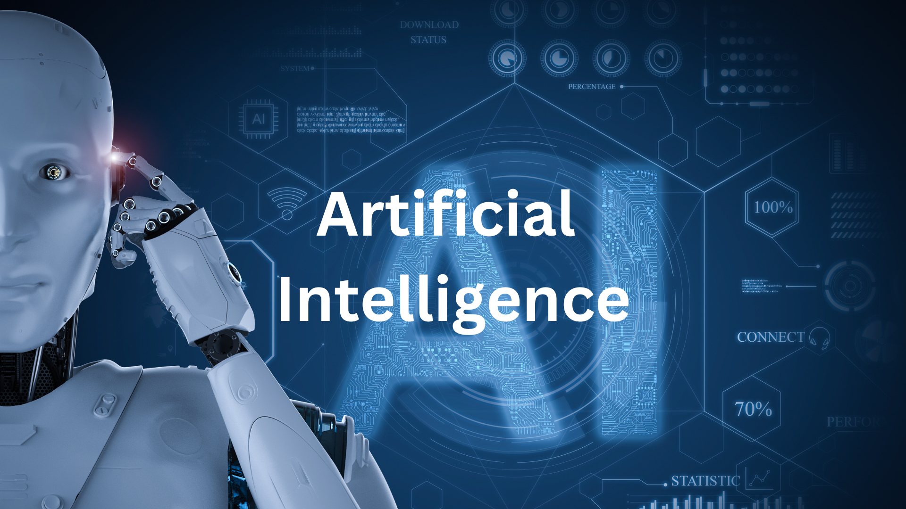
Importance of AI:
AI holds immense importance in today's world due to its ability to automate tasks, process vast amounts of data, and derive valuable insights. It has the potential to enhance productivity, improve decision-making processes, and drive innovation across sectors. With AI, machines can perform complex tasks with speed and precision, freeing up human resources to focus on more creative and strategic endeavors. The ability of AI systems to learn and adapt also opens up possibilities for personalized experiences and solutions tailored to individual needs.
How This Course Helps Students:
The "AI Guru" course is specifically designed for students in grades 9 to 12, aiming to provide them with a solid foundation in AI concepts and applications. By delving into the world of AI, students will develop essential skills and knowledge that are increasingly valuable in the digital age. This course offers the following benefits to students:
Awareness and Understanding: The course introduces students to the fundamentals of AI, its historical context, and its real-world applications. It helps them grasp the potential and impact of AI in various fields, fostering awareness and understanding of this transformative technology.
Practical Skills:
Students will gain hands-on experience in Python programming, a widely-used language for AI development. They will learn essential Python concepts and tools that are crucial for working with AI algorithms and data analysis.
Exploration of AI Applications:
The course covers a wide range of AI applications, such as robotics, natural language processing, computer vision, and machine learning. Students will gain insight into how AI is used in daily life, including areas like grammar correction, video generation, website design, and music composition.
Critical Thinking and Problem-Solving:
The course emphasizes the development of critical thinking skills by exploring AI's impact on society, ethical considerations, and the social implications of AI adoption. Students will be encouraged to analyze and evaluate the ethical challenges and potential solutions in the field of AI.
Capstone Project:
The course concludes with a capstone project, allowing students to apply their knowledge and skills to solve a real-world AI problem. This project provides hands-on experience and fosters creativity, collaboration, and problem-solving abilities.
By completing the "AI Guru" course, students will be equipped with a solid understanding of AI concepts, practical programming skills, and the ability to critically evaluate the ethical and societal implications of AI. These skills will prepare them to navigate the rapidly evolving world of AI, pursue further studies or careers in AI-related fields, and contribute to the responsible and ethical development of AI technologies.
Chapter 1: Introduction to AI
To access the chapter click here
Lesson 1: Introduction to AI
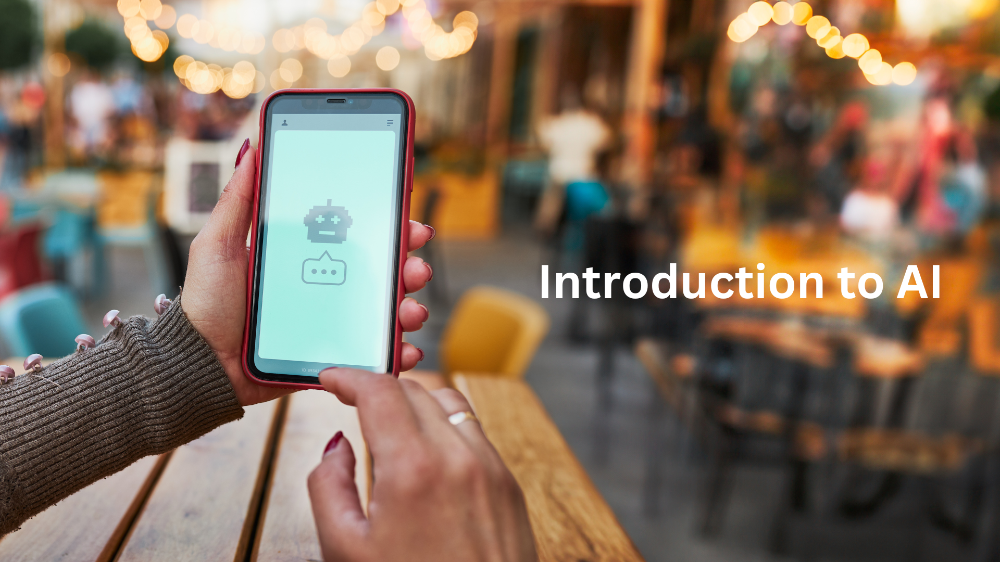 In this lesson, students will be introduced to the exciting world of Artificial Intelligence (AI). They will gain a clear understanding of what AI is and its significance in today's society. The lesson will cover the basic definition of AI as a field of study that focuses on creating intelligent machines capable of simulating human intelligence. Students will explore the goals and objectives of AI, including problem-solving, decision-making, learning, and perception.
The lesson will also provide a brief historical overview of AI, highlighting key milestones and breakthroughs that have shaped the field. Students will learn about the early developments, such as the Dartmouth Conference in 1956, and the subsequent emergence of various AI subfields, including machine learning, robotics, natural language processing, and computer vision.
Additionally, students will gain insight into the practical applications of AI across industries and sectors. They will understand how AI is being utilized in fields such as healthcare, transportation, finance, and entertainment. The lesson will emphasize the potential benefits and challenges associated with AI, including increased efficiency, enhanced decision-making, and ethical considerations.
Lesson 2: Robotics in the Real World
This lesson focuses on the intersection of AI and robotics, exploring how AI technologies are applied to real-world robotic systems. Students will learn about the design and functionality of robots and how AI plays a crucial role in making them intelligent and autonomous.
The lesson will cover various applications of robotics, including industrial robots used in manufacturing processes, autonomous vehicles, and robotic surgeries. Students will gain an understanding of how AI algorithms enable robots to perform complex tasks, process sensory data, and make decisions in real-time.

By examining real-world examples, students will grasp the impact of AI-driven robotics on efficiency, safety, and productivity. They will also explore the challenges and considerations involved in integrating AI and robotics, such as human-robot interaction and ethical considerations in autonomous systems.
Lesson 3: AI in Sports
This lesson delves into the realm of sports and highlights the role of AI in transforming the sports industry. Students will explore how AI is employed to enhance performance, analyze player data, and improve strategic decision-making.
Through concrete examples, students will understand how AI is used in sports analytics to predict player performance, optimize game strategies, and identify potential injuries. They will explore applications such as player tracking, data-driven coaching, and injury prevention.
The lesson will also shed light on the impact of AI on fan engagement and the viewing experience. Students will learn about AI-powered technologies that enhance the visualization of sports events, provide personalized content, and facilitate interactive fan experiences.
Lesson 4: Pizzas by Robots
In this lesson, students will discover an intriguing application of AI in the food industry – robotic pizza delivery. They will learn about the use of AI-powered robots in automating pizza production and delivery processes.
Students will explore the benefits and challenges of using robots for pizza delivery, such as increased efficiency, reduced delivery time, and potential cost savings. They will understand how AI algorithms and robotics work together to enable autonomous navigation, customer interaction, and seamless delivery operations.
By examining the success stories and real-world implementations of robotic pizza delivery services, students will gain insight into the practical applications of AI in the service industry and the potential impact on employment and business models.
Lesson 5: AI is the New Electricity
This lesson presents a thought-provoking analogy that positions AI as the "new electricity." Students will understand how AI, akin to electricity, has become a fundamental driving force behind technological advancements and transformative changes across various sectors.
Students will explore the potential applications of AI in industries such as healthcare, transportation, communication, and finance. They will gain insights into how AI can improve efficiency, enhance decision-making processes, and unlock new possibilities in automation and personalization.
The lesson will also touch upon the social and ethical implications of AI as the "new electricity," including issues related to privacy, job displacement, and equity. Students will be encouraged to critically analyze and discuss the benefits and challenges associated with the widespread adoption of AI as a transformative force in society.
Chapter 2: AI in Daily Life
To access the chapter click here
Lesson 1: AI in Grammarly
In this lesson, students will explore the application of AI in Grammarly, a popular writing assistant tool. They will learn how AI algorithms are employed to analyze and improve grammar, spelling, and writing style. Students will understand how Grammarly assists users in enhancing their written communication by providing real-time suggestions and corrections.
The lesson will cover the underlying AI techniques used in Grammarly, such as natural language processing (NLP) and machine learning. Students will gain insights into how these algorithms learn from vast amounts of text data and develop the ability to detect patterns and errors in written content.
Lesson 2: How is AI Used in Grammarly
Building upon the previous lesson, students will delve deeper into the specific AI techniques utilized in Grammarly. They will explore concepts such as part-of-speech tagging, syntactic analysis, and semantic analysis, which enable Grammarly to provide intelligent suggestions and feedback.
Students will understand how AI algorithms in Grammarly learn from user interactions and continuously improve their performance over time. They will also gain an understanding of the challenges and limitations of AI in language processing and the balance between automation and human creativity in writing.
Lesson 3: AI in Other Applications
This lesson broadens the students' understanding of AI by exploring its applications beyond Grammarly. Students will discover a range of AI applications across various domains, including image recognition, recommendation systems, virtual assistants, and more.
Through real-world examples, students will explore how AI algorithms power personalized recommendations on platforms like Netflix and Amazon. They will learn how AI is used in virtual assistants like Siri, Alexa, and Google Assistant to provide voice-based interactions and perform tasks such as setting reminders, answering questions, and controlling smart devices.
Lesson 4: AI in Video Generation
This lesson introduces students to the fascinating field of AI-generated videos. They will learn about deep learning techniques and generative models that enable AI systems to create realistic and compelling videos. Students will explore applications of AI in video generation, such as virtual reality, special effects, and automated content creation.
By understanding the capabilities of AI in video generation, students will gain insights into the potential impact on industries like entertainment, advertising, and marketing. They will also explore the ethical considerations surrounding AI-generated content, including issues related to authenticity and manipulation.
Lesson 5: AIDA Bookmark.com Website Design Assistant
In this lesson, students will discover how AI is used in website design through the AIDA Bookmark.com website design assistant. They will learn how AIDA employs AI algorithms to provide intelligent suggestions for website layout, design elements, and color schemes.
Students will explore how AIDA simplifies the website design process, allowing individuals without extensive coding knowledge to create visually appealing and user-friendly websites. They will understand the AI techniques used in AIDA, such as image recognition and design pattern analysis, to generate design recommendations based on user preferences and industry standards.
Lesson 6: Music Composition with AI
The final lesson in this chapter explores the intersection of AI and music composition. Students will learn how AI algorithms analyze musical patterns, styles, and genres to create original compositions.
They will discover the capabilities of AI in generating melodies, harmonies, and even full musical arrangements. Students will understand how AI tools are used by musicians and composers to experiment with new ideas, overcome creative blocks, and explore unconventional musical genres.
Through examples of AI-generated music, students will explore the potential impact of AI on the music industry, artistic expression, and the blurred boundaries between human and machine creativity.
Chapter 3: AI Terms and Definitions
To access the chapter click here
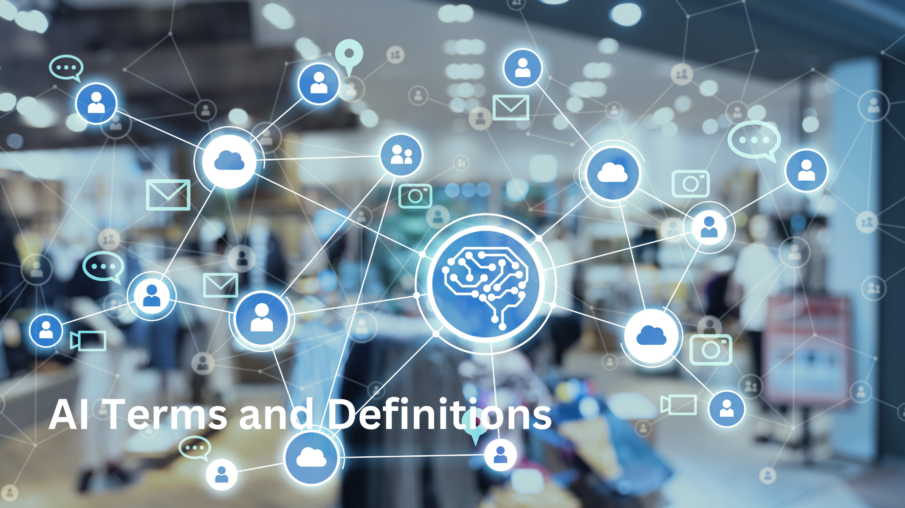
Lesson 1: Terms and Definitions in AI
In this lesson, students will learn key terms and definitions in the field of Artificial Intelligence (AI). They will become familiar with concepts such as AI, machine learning, deep learning, natural language processing (NLP), computer vision, robotics, neural networks, data mining, big data, and algorithms. Understanding these terms will provide students with a foundational knowledge of AI and its various subfields.
Lesson 2: AI Vocabulary
Expanding upon the previous lesson, students will dive deeper into AI vocabulary. They will learn terms related to supervised learning, unsupervised learning, reinforcement learning, artificial general intelligence (AGI), bias, explainability, transfer learning, algorithmic fairness, ethics, and privacy. This broader AI vocabulary will enable students to better comprehend and participate in discussions surrounding AI research, development, and ethical considerations.
Chapter 4: Basic Concepts
To access the chapter click here
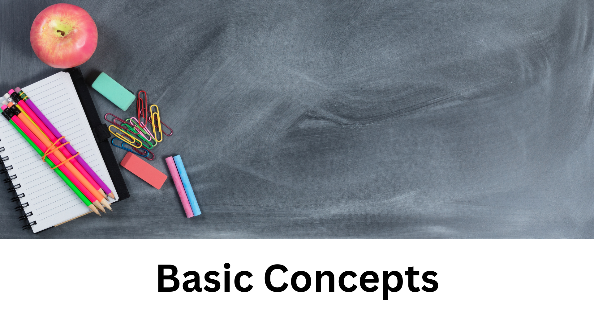
Lesson 1: The Big 5 Ideas in AI - Perception
In this lesson, students will explore the first of the "Big 5 Ideas in AI" - Perception. They will learn how AI systems aim to perceive and understand the world through various sensors, such as cameras and microphones. Students will understand the importance of computer vision and speech recognition in enabling machines to interpret and make sense of visual and auditory inputs. They will also explore applications of perception in fields like autonomous vehicles, surveillance systems, and medical imaging.
Lesson 2: The Big 5 Ideas in AI - Representation and Reasoning
Building upon the previous lesson, students will delve into the idea of "Representation and Reasoning" in AI. They will learn how AI systems represent knowledge and use reasoning techniques to solve problems and make decisions. Students will understand the importance of symbolic representation, logic, and knowledge-based systems in enabling machines to process and manipulate information. They will explore examples of AI applications in areas like expert systems, game-playing agents, and automated reasoning.
Lesson 3: The Big 5 Ideas in AI - Learning
In this lesson, students will explore the idea of "Learning" as one of the fundamental concepts in AI. They will discover how machine learning algorithms enable systems to automatically learn from data and improve their performance over time. Students will gain an understanding of supervised learning, unsupervised learning, and reinforcement learning. They will explore real-world applications of learning algorithms, such as image recognition, natural language processing, and recommendation systems.
Lesson 4: The Big 5 Ideas in AI - Natural Interaction
This lesson focuses on the concept of "Natural Interaction" in AI. Students will learn how AI systems aim to interact with humans in a natural and intuitive manner. They will explore technologies like natural language processing, chatbots, virtual assistants, and gesture recognition. Students will understand how AI enables seamless and human-like communication between humans and machines, leading to applications in voice assistants, customer service, and user interfaces.
Lesson 5: The Big 5 Ideas in AI - Social Impact
The final lesson in this chapter explores the social impact of AI. Students will examine the ethical, legal, and societal implications of AI technologies. They will learn about issues like bias in AI algorithms, privacy concerns, job displacement, and the responsibility of AI developers and users. Students will explore case studies and engage in discussions about the potential benefits and risks associated with the widespread adoption of AI in society.
By covering the Big 5 Ideas in AI - Perception, Representation and Reasoning, Learning, Natural Interaction, and Social Impact - students will gain a comprehensive understanding of the foundational concepts and implications of AI technology. They will recognize the breadth and potential of AI applications and the ethical considerations that come with its development and implementation.
Chapter 5: Python for AI
To access the chapter click here
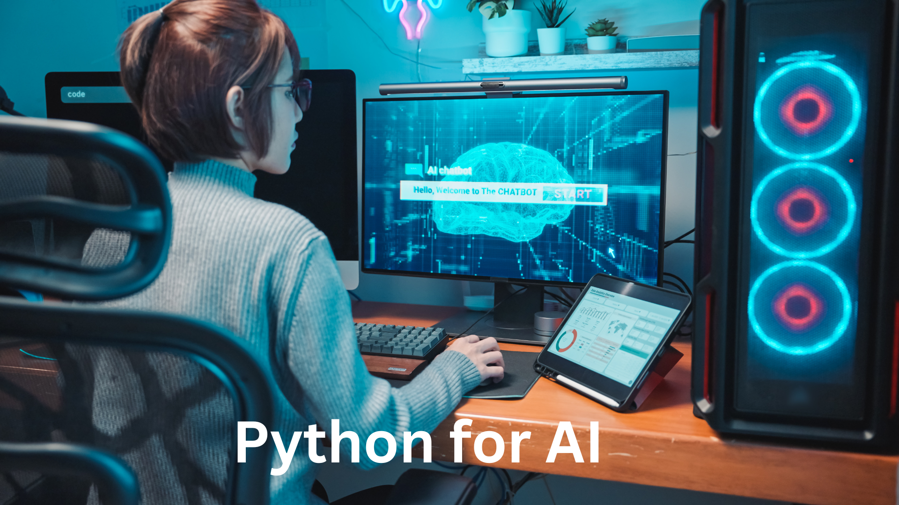
Lesson 1: Introduction to Python
In this lesson, students will be introduced to Python, a popular programming language widely used in the field of AI. They will learn about the benefits of Python for AI development, its simplicity, readability, and the abundance of AI libraries and frameworks available.
# Hello World Program
print("Hello, World!")
Lesson 2: Python Fundamentals - Comments, Variables, Constants, Print Functions
Students will dive into the fundamental building blocks of Python. They will learn how to write comments to provide explanations and enhance code readability. They will also explore variables, constants, and how to assign values to them. Additionally, students will learn how to use the print function to display output on the console.
# Comments
# This is a comment in Python
# Variables and Constants
x = 10 # Variable
y = 5 # Variable
PI = 3.14 # Constant
# Print Function
print(x)
print("The value of y is:", y)
print("The value of PI is:", PI)
Lesson 3: Operators and Operations
This lesson will cover different types of operators in Python, including arithmetic, assignment, comparison, logical, and bitwise operators. Students will understand how to use these operators to perform mathematical and logical operations on variables and constants.
# Arithmetic Operators
x = 10
y = 5
print(x + y) # Addition
print(x - y) # Subtraction
print(x * y) # Multiplication
print(x / y) # Division
print(x % y) # Modulo
print(x ** y) # Exponentiation
# Assignment Operators
x = 10
x += 5 # Equivalent to x = x + 5
print(x)
# Comparison Operators
x = 10
y = 5
print(x > y) # Greater than
print(x < y) # Less than
print(x == y) # Equal to
print(x != y) # Not equal to
# Logical Operators
a = True
b = False
print(a and b) # Logical AND
print(a or b) # Logical OR
print(not b) # Logical NOT
Lesson 4: Conditionals and Loops
Students will learn about conditional statements, such as if-else and nested if-else, to make decisions in their programs. They will also explore loops, including the for loop and the while loop, to iterate over data and perform repetitive tasks.
# Conditional Statements
x = 10
if x > 0:
print("Positive")
elif x < 0:
print("Negative")
else:
print("Zero")
# For Loop
for i in range(1, 6):
print(i)
# While Loop
count = 0
while count < 5:
print(count)
count += 1
Lesson 5: Keywords and Identifiers
In this lesson, students will learn about Python keywords, reserved words with predefined meanings, and how to use them appropriately. They will also understand the rules for creating valid identifiers, which are names given to variables, functions, or other entities in the code.
# Keywords
import keyword
print(keyword.kwlist)
# Identifiers
my_variable = 10
MyVariable = 20
_my_variable = 30
print(my_variable)
print(MyVariable)
print(_my_variable)
Lesson 6: Data Types
Students will explore different data types in Python, including integers, floating-point numbers, strings, booleans, and lists. They will understand how to declare variables of these types and perform operations specific to each data type.
# Integers
x = 10
print(x)
# Floating-Point Numbers
y = 3.14
print(y)
# Strings
name = "John Doe"
print(name)
# Booleans
is_true = True
is_false = False
print(is_true)
print(is_false)
# Lists
my_list = [1, 2, 3, 4, 5]
print(my_list)
Lesson 7: Functions
This lesson will cover the concept of functions in Python. Students will learn how to define functions, pass arguments, and return values. They will also understand the benefits of using functions for code organization, reusability, and modularity.
# Function Definition
def add_numbers(x, y):
return x + y
# Function Call
result = add_numbers(5, 10)
print(result)
Lesson 8: Lists
Students will delve into the list data structure, which allows the storage of multiple values in a single variable. They will learn how to create and manipulate lists, perform common operations such as indexing and slicing, and explore useful list methods.
# Creating Lists
my_list = [1, 2, 3, 4, 5]
print(my_list)
# Accessing Elements
print(my_list[0]) # First element
print(my_list[-1]) # Last element
# Slicing
print(my_list[1:4]) # Elements from index 1 to 3
# Modifying Elements
my_list[2] = 10
print(my_list)
# List Methods
my_list.append(6) # Append element to the end
print(my_list)
my_list.remove(2) # Remove element
print(my_list)
my_list.sort() # Sort elements
print(my_list)
Lesson 9: Calculator Using Python
In this hands-on lesson, students will apply their Python knowledge to create a basic calculator program. They will learn how to take user input, perform mathematical operations, and display the results.
Lesson 10: Python Problem Statements
This lesson will present students with problem statements or coding challenges that they can solve using Python. They will apply their programming skills and problem-solving abilities to tackle these challenges and develop their confidence in Python programming.
By the end of this chapter, students will have a solid foundation in Python programming and be equipped with the necessary skills to start implementing AI algorithms and projects using Python.
Chapter 6: AI Project Cycle
To access the chapter click here
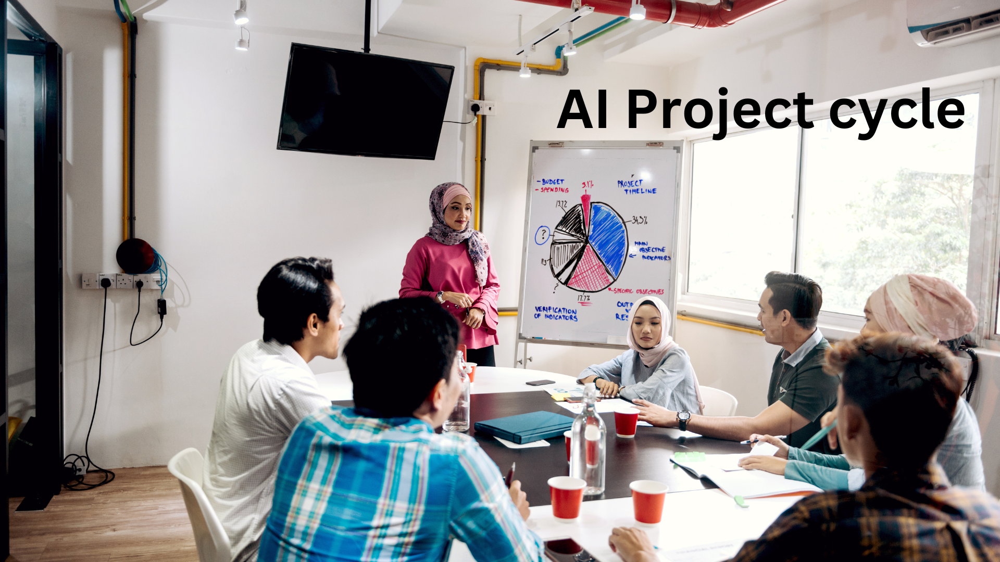
Lesson 1: Problem Scoping
In this lesson, students will learn about the importance of problem scoping in AI projects. They will understand the process of identifying and defining the problem that the AI system aims to solve. Students will explore techniques such as problem decomposition, goal setting, and requirement gathering to establish clear objectives and boundaries for their AI projects.
Lesson 2: Data Acquisition
Data acquisition plays a crucial role in AI projects. In this lesson, students will learn various methods to collect relevant data for training and testing their AI models. They will explore techniques such as web scraping, data APIs, data labeling, and data generation. Students will also understand the challenges associated with data acquisition, such as data quality and privacy concerns.
Lesson 3: Data Exploration
Before diving into modeling, it is important to explore and analyze the acquired data. In this lesson, students will learn data exploration techniques to gain insights and understand the characteristics of their dataset. They will explore methods such as data visualization, statistical analysis, and data preprocessing. Students will gain an understanding of data distribution, outliers, missing values, and feature engineering.
Lesson 4: Modeling
Modeling is a key component of AI projects. In this lesson, students will learn about different modeling approaches and algorithms used in AI. They will explore techniques such as rule-based systems, decision trees, and machine learning algorithms. Students will understand the strengths and limitations of each approach and learn how to select the most suitable modeling technique for their AI project.
Lesson 5: Rule-Based Approach
In this lesson, students will delve into the rule-based approach in AI. They will learn how to define rules and conditions that guide the decision-making process in AI systems. Students will understand the concept of if-then rules and how they can be used to create rule-based systems. They will explore examples of rule-based AI applications in areas such as expert systems and chatbots.
Lesson 6: Decision Tree
Decision trees are powerful tools for classification and regression tasks in AI. In this lesson, students will learn about the concept of decision trees and how they can be constructed and used to make predictions. They will understand the process of splitting data based on features and creating a tree-like structure. Students will explore decision tree algorithms such as ID3 and CART and learn how to interpret and visualize decision trees.
Lesson 7: Learning Approach
The learning approach in AI involves training models on labeled data to make predictions or take actions. In this lesson, students will learn about supervised learning, unsupervised learning, and reinforcement learning. They will understand the process of training models using labeled data, clustering techniques for unsupervised learning, and the concept of rewards and punishments in reinforcement learning. Students will explore real-world examples of learning-based AI applications.
By covering the AI project cycle, students will gain a comprehensive understanding of the different stages involved in developing AI systems. They will learn how to define and scope problems, acquire and explore data, select appropriate modeling techniques, and apply rule-based and learning approaches. This knowledge will enable students to embark on their own AI projects and solve real-world problems using AI methodologies.
Chapter 7: Math for AI
To access the chapter click here
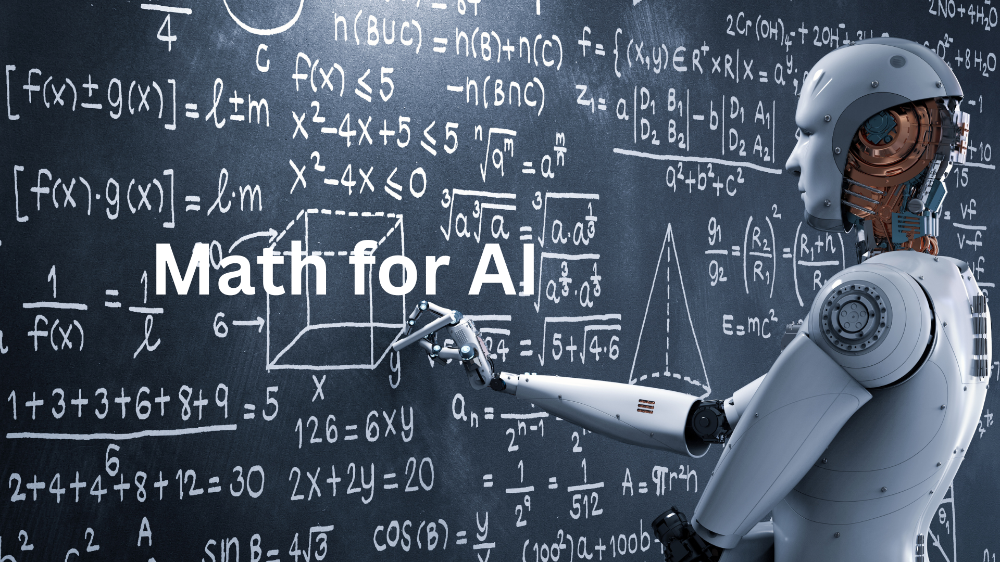
Lesson 1: Introduction to Math for AI
In this lesson, students will be introduced to the foundational mathematical concepts that are essential for understanding and working with AI algorithms. They will learn about the key mathematical principles and techniques that underpin various AI methodologies.
Chapter 8: Mobile App Development
To access the chapter click here
Lesson 1: Introduction to Thunkable
In this lesson, students will be introduced to Thunkable, a visual app development platform that allows them to create mobile apps without coding. They will learn about the features and capabilities of Thunkable and understand its user-friendly interface.
Lesson 2: Basics of Thunkable
Students will dive into the basics of Thunkable in this lesson. They will explore the different components and elements available in Thunkable, such as buttons, labels, text inputs, and images. Students will learn how to add and customize these components to design the user interface of their mobile apps.
Lesson 3: Workspace and Blocks
The workspace and blocks are the core components of Thunkable that enable students to add functionality to their apps. In this lesson, students will learn how to navigate the workspace, understand the block-based programming interface, and use different blocks to create event-driven behaviors and actions in their apps.
Lesson 4: Image Recognition App on Thunkable
In this hands-on lesson, students will apply their knowledge of Thunkable to develop an image recognition app. They will learn how to use the camera component to capture images, integrate image recognition APIs or machine learning models to identify objects in the images, and display the results in their app's user interface.
Lesson 5: Testing the App
Testing is an essential part of app development to ensure its functionality and user experience. In this lesson, students will learn different testing techniques for their Thunkable apps. They will understand how to simulate app behavior on the Thunkable platform, test different app scenarios, and gather feedback to improve their app's performance.
By exploring mobile app development using Thunkable, students will gain practical experience in creating their own mobile apps. They will learn how to design the user interface, add functionality using blocks, and integrate advanced features like image recognition. Through hands-on projects and testing, students will develop problem-solving skills and enhance their creativity in developing mobile apps.
Chapter 9: Conversational AI
To access the chapter click here
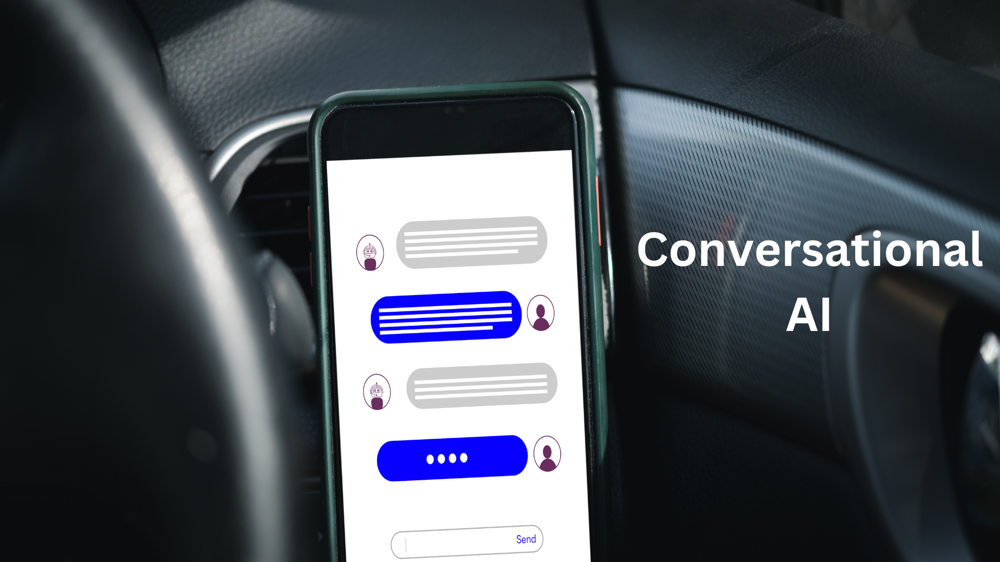
Lesson 1: Introduction to Conversational AI
In this lesson, students will be introduced to Conversational AI, a branch of AI that focuses on creating human-like interactions between computers and humans. They will learn about the importance of natural language understanding and generation in conversational AI systems and explore real-world examples of conversational AI applications.
Lesson 2: Introduction to Alexa
Alexa, developed by Amazon, is one of the most popular conversational AI platforms. In this lesson, students will learn about the features and capabilities of Alexa. They will understand how Alexa uses voice recognition and natural language processing to understand user commands and respond with relevant information or actions.
Lesson 3: What are Skills?
Skills are the building blocks of conversational AI systems like Alexa. In this lesson, students will learn what skills are and how they enable Alexa to perform specific tasks or provide information to users. They will explore various types of skills, including smart home skills, trivia skills, news skills, and more.
Lesson 4: What are Alexa Skills?
Building upon the previous lesson, students will specifically focus on Alexa skills in this lesson. They will learn about the unique characteristics and requirements of developing skills for the Alexa platform. Students will understand how Alexa skills can extend the functionality of Alexa and provide customized experiences for users.
Lesson 5: Why Build Alexa Skills?
In this lesson, students will explore the benefits and advantages of building Alexa skills. They will understand how Alexa skills can enhance user experiences, provide convenience, and enable interaction with various services and devices. Students will learn about the potential business opportunities and the growing demand for Alexa skills in the market.
Lesson 6: How to Build Alexa Skills
Students will gain hands-on experience in building Alexa skills in this practical lesson. They will learn the step-by-step process of developing Alexa skills, including defining the skill's interaction model, creating intents and utterances, and implementing the backend logic using Alexa Developer Console or programming languages like Node.js.
Lesson 7: Advantages of Alexa Skills
In this lesson, students will explore the advantages and unique features of Alexa skills. They will learn how skills can leverage voice-based interactions, provide personalized experiences, and integrate with other platforms and services. Students will understand the potential of Alexa skills to innovate and revolutionize various industries.
Lesson 8: How to Publish Alexa Skills
Once students have developed their Alexa skills, they will need to publish them to make them available to users. In this lesson, students will learn about the process of submitting and publishing Alexa skills to the Alexa Skills Store. They will understand the requirements, guidelines, and best practices for ensuring their skills meet the quality standards.
By delving into conversational AI and specifically exploring Alexa skills, students will gain a comprehensive understanding of how natural language processing and voice-based interactions are used to create intelligent conversational agents. They will learn the basics of building and publishing Alexa skills, empowering them to create their own voice-driven applications and contribute to the growing field of conversational AI.
Chapter 10: Computer Vision
To access the chapter click here
Lesson 1: Introduction to Computer Vision
In this lesson, students will be introduced to the exciting field of computer vision. They will learn about the fundamental concepts and goals of computer vision, which involves enabling computers to understand and interpret visual information. Students will explore the key components and techniques used in computer vision systems.
Lesson 2: Advantages of Computer Vision
Computer vision offers numerous advantages and benefits across various industries and applications. In this lesson, students will learn about the advantages of computer vision technology. They will understand how computer vision can automate processes, enhance efficiency, improve accuracy, and enable new possibilities in fields such as healthcare, transportation, security, entertainment, and more.
Lesson 3: Uses of Computer Vision
Computer vision has a wide range of practical uses and applications. In this lesson, students will explore the diverse areas where computer vision is applied. They will learn about object detection and recognition, image classification, facial recognition, motion tracking, augmented reality, autonomous vehicles, medical imaging, and other real-world use cases of computer vision.
By studying computer vision, students will gain an understanding of how machines can analyze and interpret visual data, opening up exciting possibilities for automation, innovation, and problem-solving. They will explore the advantages of computer vision technology and discover its wide-ranging applications across various industries, fostering their curiosity and interest in this rapidly evolving field.
Chapter 11: Natural Language Processing (NLP)
To access the chapter click here
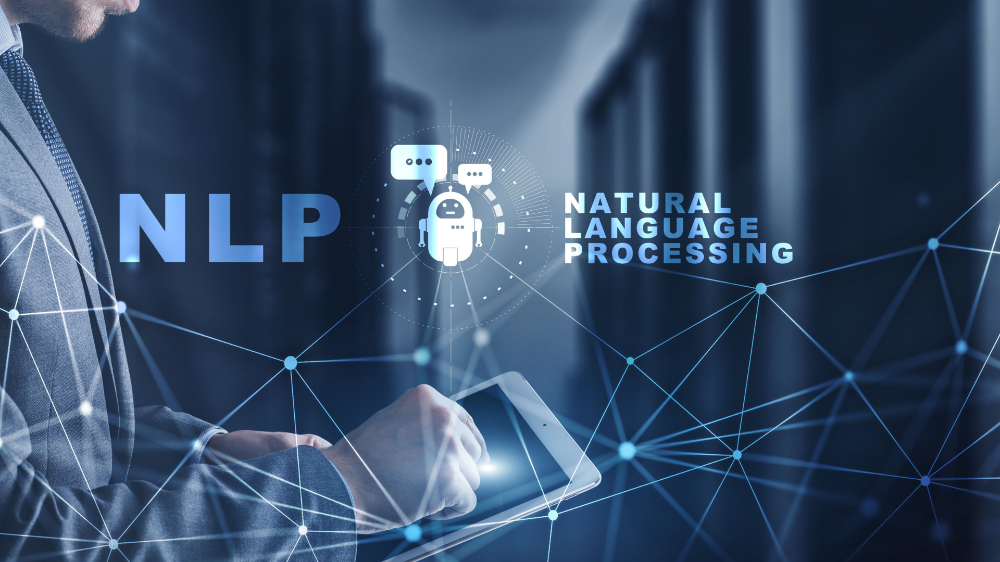
Lesson 1: Introduction to NLP
In this lesson, students will be introduced to the field of Natural Language Processing (NLP), which focuses on enabling computers to understand, interpret, and generate human language. They will learn about the challenges and goals of NLP, including tasks such as language understanding, sentiment analysis, and language generation.
Lesson 2: Applications of NLP
NLP has a wide range of applications that have a significant impact on our daily lives. In this lesson, students will explore various applications of NLP across different domains. They will learn about machine translation, chatbots, virtual assistants, sentiment analysis in social media, spam detection, and information retrieval. Students will understand how NLP is used to enhance human-computer interaction and enable intelligent language-based systems.
Lesson 3: Text Recognition
Text recognition is an important task in NLP that involves extracting text information from images or scanned documents. In this lesson, students will learn about Optical Character Recognition (OCR) techniques used in text recognition. They will explore how OCR algorithms work and how they can be applied to convert images or printed text into machine-readable text.
Lesson 4: Information Extraction
Information extraction focuses on extracting structured information from unstructured text sources. In this lesson, students will learn about techniques and algorithms used in information extraction. They will explore named entity recognition, relationship extraction, and event extraction. Students will understand how information extraction is used in applications such as news summarization, knowledge graph construction, and data mining.
Lesson 5: Speech Processing
Speech processing involves the analysis and understanding of spoken language. In this lesson, students will learn about techniques used in speech processing tasks such as speech recognition and speech synthesis. They will explore the challenges in automatic speech recognition, acoustic modeling, and language modeling. Students will understand how speech processing technologies enable voice assistants, transcription services, and voice-controlled systems.
By studying NLP, students will gain insights into the fascinating world of natural language understanding and generation. They will explore the applications of NLP in various domains, including text recognition, information extraction, and speech processing. This knowledge will empower them to contribute to the development of language-based technologies and address real-world challenges in communication and information processing.
Chapter 12: Machine Learning (ML)
To access the chapter click here
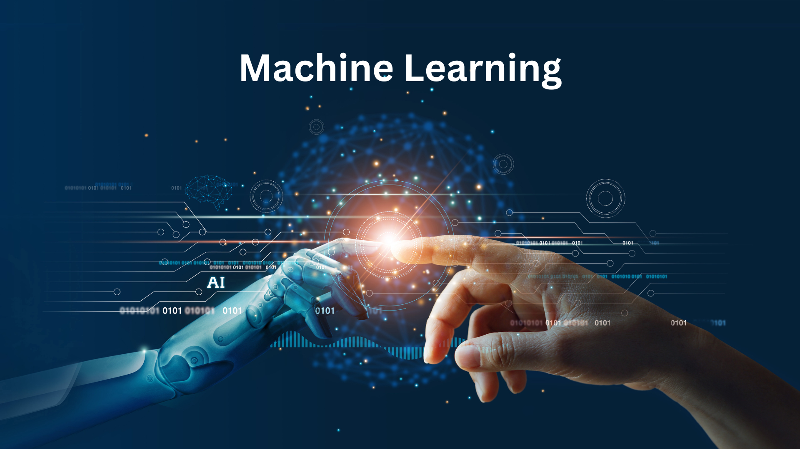
Lesson 1: Introduction to Machine Learning
In this lesson, students will be introduced to the field of Machine Learning (ML). They will learn about the basic concepts and principles of ML, including the distinction between supervised, unsupervised, and reinforcement learning. Students will understand how ML algorithms learn from data and make predictions or decisions without being explicitly programmed.
Lesson 2: Applications of Machine Learning
Machine Learning has a wide range of applications across various domains. In this lesson, students will explore the diverse applications of ML in real-world scenarios. They will learn about ML applications in image recognition, natural language processing, recommendation systems, fraud detection, autonomous vehicles, healthcare, and more. Students will understand how ML algorithms are used to solve complex problems and make intelligent predictions.
Lesson 3: Flowchart of Machine Learning
In this lesson, students will learn about the general flowchart or pipeline of a typical machine learning project. They will understand the different stages involved, including data preprocessing, feature engineering, model selection, model training, and model evaluation. Students will gain insights into the iterative nature of the ML process and the importance of data quality and model performance evaluation.
By studying Machine Learning, students will gain a solid foundation in understanding how computers can learn from data and make predictions or decisions. They will explore the wide-ranging applications of ML in various fields and understand the general flowchart of a typical ML project. This knowledge will enable them to explore advanced ML techniques, develop their own ML models, and contribute to solving complex problems using data-driven approaches.
Chapter 13: Robotics
To access the chapter click here
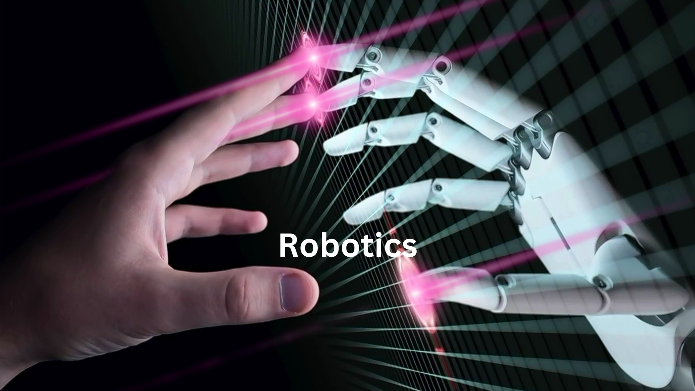
Lesson 1: AI in Robotics
In this lesson, students will explore the intersection of Artificial Intelligence (AI) and Robotics. They will learn how AI techniques are integrated into robotic systems to enhance their capabilities and enable intelligent behavior. Students will understand how AI algorithms, such as machine learning and computer vision, are used to perceive and interact with the environment in robotics applications.
Lesson 2: Applications of Robotics
Robotics has a wide range of applications across various industries and sectors. In this lesson, students will explore the diverse areas where robotics is employed. They will learn about industrial robotics used in manufacturing and automation, service robots in healthcare and hospitality, agricultural robots for farming, exploration robots in space missions, and more. Students will understand the impact of robotics on improving efficiency, productivity, and safety in various domains.
By studying AI in robotics and exploring its applications, students will gain insights into the exciting field of robotics and understand how AI technologies enable robots to perform complex tasks and interact with the world. They will develop an appreciation for the advancements in robotics and the potential for robots to revolutionize various industries and contribute to human well-being.
Chapter 14: AI and Society
To access the chapter click here
Lesson 1: Sustainable Development Goals (SDGs)
In this lesson, students will learn about the United Nations' Sustainable Development Goals (SDGs) and how AI can contribute to achieving these goals. They will explore the 17 SDGs, which address global challenges such as poverty, education, climate change, gender equality, and more. Students will understand the potential of AI technologies to accelerate progress towards these goals.
Lesson 2: SDG Targets and AI Applications
Building upon the previous lesson, students will delve deeper into each SDG and explore specific targets within each goal. They will learn how AI applications and technologies can be harnessed to address these targets and make a positive impact. Students will understand the role of AI in areas such as healthcare, education, environmental monitoring, disaster response, and social justice.
Lesson 3: AI Ethics
Ethics is a critical aspect of AI development and deployment. In this lesson, students will learn about the ethical considerations surrounding AI. They will explore principles such as transparency, fairness, accountability, and privacy in the context of AI. Students will understand the importance of ensuring ethical practices in AI development and the potential consequences of unethical AI systems.
Lesson 4: Ethical Issues in AI
AI raises several ethical concerns and challenges that need to be addressed. In this lesson, students will explore various ethical issues in AI, such as bias in algorithms, job displacement, surveillance, and the impact on privacy and data protection. Students will critically analyze these issues and consider the ethical implications of AI technology in society.
By studying the intersection of AI and society, students will gain an understanding of how AI can contribute to achieving global sustainability goals outlined by the SDGs. They will also develop an awareness of the ethical considerations and challenges associated with AI deployment. This knowledge will empower them to be responsible AI practitioners and advocates for the ethical and sustainable use of AI technologies.
Chapter 15: Capstone Project
To access the chapter click here
The capstone project is the culmination of the AI Guru course, where students will have the opportunity to apply their knowledge and skills acquired throughout the course to a real-world project. This chapter serves as a guide for students as they embark on their capstone project journey.
Step 1: Project Planning and Proposal
In this step, students will learn the importance of project planning and how to develop a comprehensive project proposal. They will understand the key elements of a project plan, including defining the problem statement, setting project goals and objectives, outlining project deliverables, and creating a timeline and resource allocation. Students will gain insights into effective project management strategies and techniques.
Step 2: Data Acquisition and Preparation
Data plays a crucial role in AI projects. In this step, students will learn how to acquire and prepare data for their capstone project. They will explore various data sources and learn techniques for data collection, data cleaning, data preprocessing, and data augmentation. Students will understand the importance of data quality and the impact it has on the performance of AI models.
Step 3: Model Development and Evaluation
In this step, students will dive into the development and evaluation of AI models for their capstone project. They will learn about different algorithms and techniques suitable for their project requirements. Students will explore model training, hyperparameter tuning, model evaluation metrics, and performance analysis. They will gain hands-on experience in developing AI models and optimizing their performance.
Step 4: Project Implementation and Deployment
Once the AI models are developed and evaluated, it's time to implement and deploy the capstone project. In this step, students will learn about the necessary steps to deploy their project in a real-world scenario. They will explore considerations for scalability, system integration, user interface, and performance optimization. Students will gain insights into best practices for deploying AI projects effectively.
Step 5: Project Presentation and Documentation
In the final step, students will learn how to effectively present their capstone project and document their work. They will understand the importance of clear and concise project documentation, including project reports, code documentation, and user manuals. Students will also gain presentation skills to effectively communicate their project objectives, methodology, results, and insights.
The capstone project provides students with a hands-on opportunity to apply their knowledge and skills in a practical setting. Through careful planning, data acquisition, model development, and project implementation, students will gain valuable experience in solving real-world problems using AI techniques. The final presentation and documentation will showcase their achievements and serve as a valuable addition to their portfolio.
Conclusion
In conclusion, the "AI Guru" course provides a comprehensive exploration of the fascinating field of Artificial Intelligence (AI). From the introductory chapters that lay the foundation of AI concepts to the advanced topics like robotics, NLP, and computer vision, students are exposed to the diverse applications and implications of AI in our society.
Throughout the course, students learn about the fundamental principles and techniques of AI, including machine learning, Python programming, and math for AI. They gain practical skills in developing AI models, working with real-world data, and deploying AI applications. The course also emphasizes the ethical considerations and societal impact of AI, fostering a sense of responsibility and awareness among students.
By targeting students in grades 9-12, this course caters to young minds eager to explore the possibilities of AI. It equips them with the knowledge and skills necessary to navigate the rapidly evolving technological landscape and empowers them to become active participants in shaping the future of AI.
Through the capstone project, students have the opportunity to apply their learning in a real-world context, consolidating their skills and showcasing their abilities to develop innovative AI solutions. The course not only prepares students for further academic pursuits in AI but also equips them with practical skills that are valuable in a wide range of professional fields.
Overall, the "AI Guru" course offers a comprehensive and engaging journey into the world of AI. By providing a solid understanding of AI concepts, practical skills, and ethical considerations, it empowers students to become AI enthusiasts and contribute positively to the advancement of AI technologies in our society.